01Boton CONSULTAR
Al seleccionar el boton Consultar se abre el formulario de consultas simples
mostrando todos los datos del formulario (campos de la orden seleccionada o del registro actual).
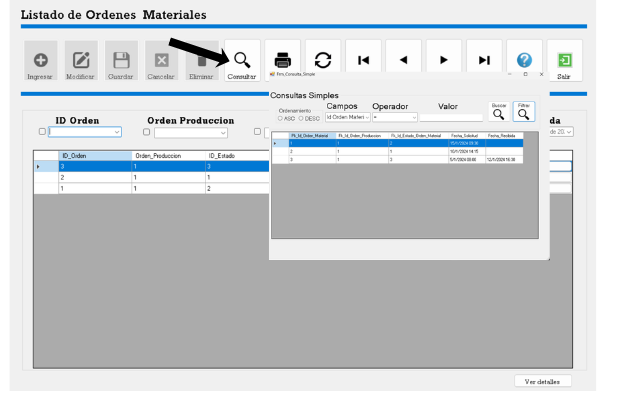
1.png — Consulta simple
02Boton IMPRIMIR
Al seleccionar el boton Imprimir se abre el reporte en una nueva ventana
o vista previa de impresion con los datos visibles en pantalla.
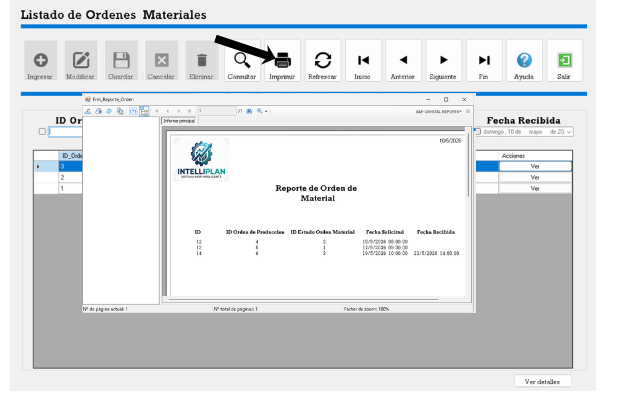
2.png — Reporte de impresion
03Boton REFRESCAR
Al seleccionar Refrescar se actualiza la pantalla con los nuevos datos
(recarga la tabla/registros desde la base de datos o reinicia filtros).
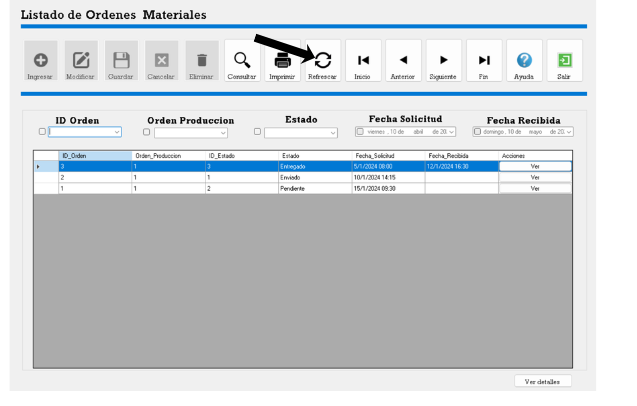
3.png — Actualizacion de datos
04Navegacion por filas: Inicio / Anterior / Siguiente / Fin
Con estos botones puede desplazarse por todo el formulario (tabla de ordenes):
Inicio Regresa a la primera fila.
Anterior Regresa a la fila anterior.
Siguiente Avanza a la siguiente fila.
Fin Salta a la ultima fila.
Inicio Regresa a la primera fila.
Anterior Regresa a la fila anterior.
Siguiente Avanza a la siguiente fila.
Fin Salta a la ultima fila.
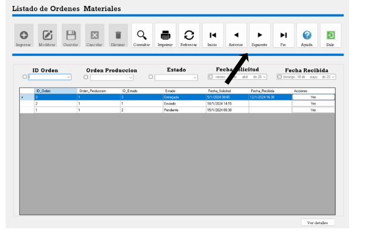
4.png — Navegacion entre filas
05Boton SALIR
Con el boton Salir puede cerrar el formulario actual.
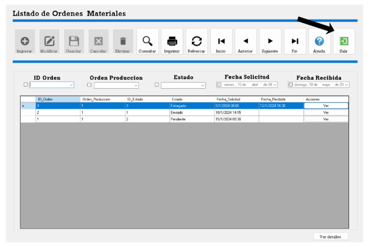
5.png — Cerrar formulario
06Filtrar por ID de orden
Al marcar la casilla correspondiente, podra filtrar la tabla por ID de orden.
Ingrese el valor y se muestran solo las ordenes que coincidan.
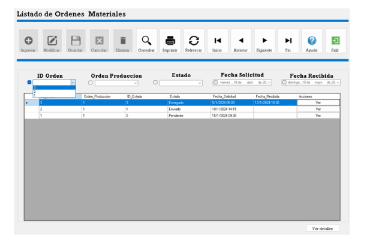
6.png — Filtro ID Orden
07Filtrar por ID de produccion
Al marcar la casilla podra filtrar por ID de produccion. Muestra los registros
que coincidan con el valor ingresado.
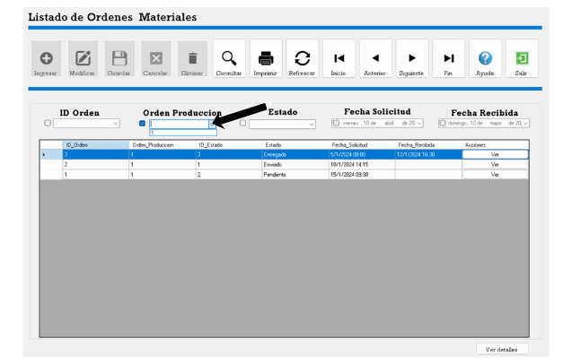
7.png — Filtro ID Produccion
08Filtrar por Estado
Al marcar la casilla podra filtrar por estado (ej: Pendiente, Proceso, Finalizado).
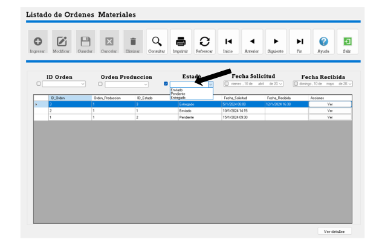
8.png — Filtro Estado
09Filtrar por rango de fechas
Al marcar mas casillas podra filtrar por rango de fechas:
fecha inicio y fecha fin. Se combina con los demas filtros si estan activos.
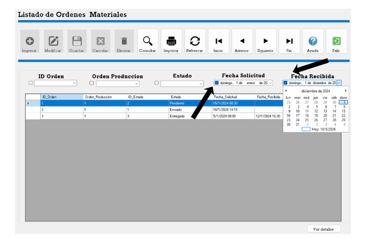
9.png — Rango de fechas
10Boton VER en la fila (detalle orden seleccionada)
Al seleccionar el boton Ver (dentro de cada fila de la tabla) se abrira
el formulario de detalle de la orden seleccionada con todos sus campos.
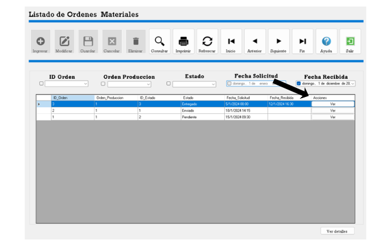
10.png — Detalle de orden
11Boton "Ver detalle" (sin orden cargada)
Al seleccionar el boton Ver detalle (independiente) se abrira el
formulario de detalle sin ninguna orden cargada, vacio o en modo creacion.
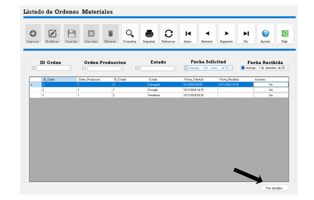
11.png — Detalle vacio